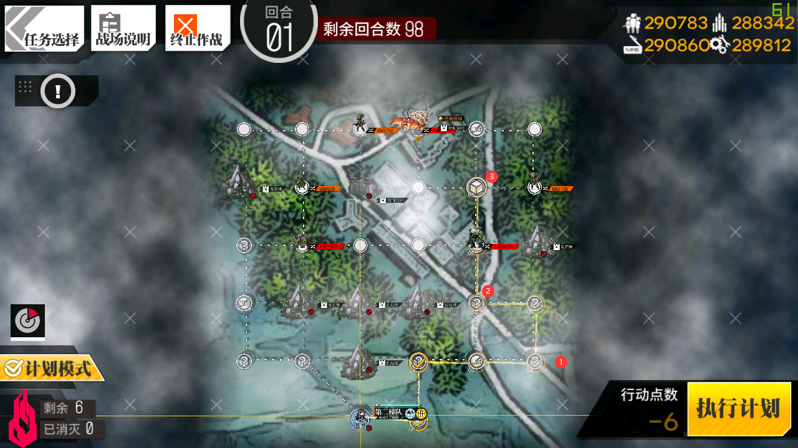

说实话这次小活动无论是流程还是打捞都没啥难度，然而打捞过程基本没有捷径，甚至可以说有点低效率+精污了，估计也是考虑到大家都有，而四把枪也都没有啥复制意义，让大多数人有理由摸了吧。
当然，肯定还是有需要打捞的指挥官，不多说了，打捞攻略奉上。
E1 孤岛假日 (CX4风暴)
2战2判撤退打捞。推荐配置 一队单AR(推荐AN94)+1狗粮
如图，机场下单AR，指挥部下狗粮，计划模式如图即可，结束后撤退AR队重开。
E2 时来运转(OTs-14)
不知道多少战多少判，过图打捞。此图敌人随机生成，逻辑也是随机，不清楚多少战多少判，而且计划模式很难用，略微精污。
推荐一队小公主+1手枪，二队AN94+1SMG
如图
第一回合先下二队94队，向上一格到空白机场，指挥部再下小公主队，结束回合。
第二回合，小公主队打掉红圈中的寄居蟹和小西瓜后直奔右边光点即可。
因为敌人运动轨迹和刷敌位置都是随机的，所以很难用计划模式，推荐手动，目的是把红圈中的寄居蟹和小西瓜打掉后占领目标点。。AN94队是为了行动点+赌运气的，有时候小螃蟹会刷在旁边并且撞上来，这样就会多一判
E3 秘域险境(AK-74U)
依然不确定多少战，2判，过图打捞只能上一队，推荐小公主+双手枪(最好带个能贴膜的)
|
不分回合，首先计划模式按照图1中点四下。
队伍停下来后，吃掉补给，走到图2所示位置操作控制台即可。
有人问我为什么不计划模式一步到位，因为途中的随机点皆有可能刷出敌人，有时候可能走到半途弹药就用完了，需要补给。
再次吐槽一下这个计划模式，太不智能了，不会自动绕开路障和门。。
还有一种路线，走右边，如图计划模式123，吃了箱子后计划模式打寄居蟹开控制台即可。优点是可以S胜(其实少打一个铁血狙，判定总数一样，大家看喜好选择吧)

E4 夏日余光(X95)
又是一个敌人随机移动的图，话说打捞做成这样，ym是铁了心了要恶心玩家？
四队，2打捞2狗粮。说下简单思路吧：
如图1，第一回合上指挥部下一队，推荐AR，因为要打狗和绿弓，下机场再下一队，推荐RF，因为要打兵工厂且有可能撞上绿憨憨。然后各自前走一步，上下再下两个狗粮，直接结束。
第二回合，这时候有两种情况，一是绿弓直接向前一步，此时是最优解，按照图2路线，两队分别前进打掉判断点的绿弓和兵工厂，原路返回撤退即可。
第二种情况，绿弓向后一步(如图2)，此时下方RF队依然向上打掉兵工厂后原路返回，上方AR队前进打掉绿弓，等第三回合撤退两个打手即可。(不嫌麻烦可以再花点时间顺便打掉上路的小螃蟹，也有判定，但是不推荐过关打捞，要么拆叶格尔要么需要很多回合，更麻烦)
捞箱子
2种方法，就不上图了。
1.和E2打捞类似，也是2队，一队向上到白机场，另一队直接计划模式到右下角目标点，第三回合结算。(也可以使用铁血BOSS带鬼步芯片，快一回合)
2.E3，RF队带空降(推荐三星以上)，直接非控制台旁边的点，打掉寄居蟹开控制台即可